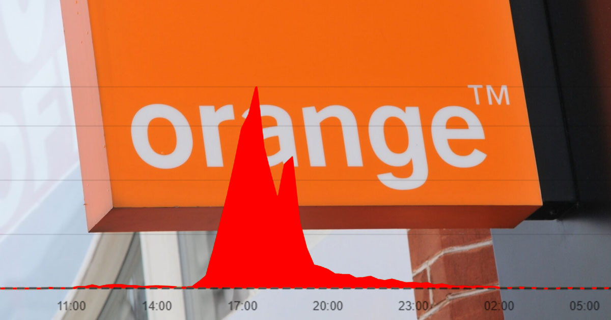

El ataque contra Orange que desconectó a España de Internet
Un hacker logró causar un apagón de internet en gran parte de España, afectando a millones de usuarios de Orange. Este ataque cibernético reveló vulnerabilidades en la infraestructura de telecomunicaciones, generando preocupación entre los expertos en ciberseguridad.
El incidente se produjo cuando el atacante manipuló las configuraciones de red, lo que llevó a la caída de los servicios de internet y telefonía. Muchos usuarios experimentaron interrupciones significativas, lo que provocó el caos en empresas y hogares.
Con este ataque, se pone de manifiesto la necesidad urgente de fortalecer la seguridad en las redes de telecomunicaciones. Expertos han señalado que este tipo de incidentes podrían ser un indicativo de futuras amenazas más sofisticadas y peligrosas.
La empresa Orange ha iniciado una investigación para determinar el alcance del ataque y restaurar los servicios afectados. Este suceso destaca la importancia de contar con sistemas de seguridad robustos que protejan tanto a los proveedores de servicios como a sus usuarios.
El hacker utilizó técnicas de "man-in-the-middle" para interceptar y redirigir el tráfico de datos, lo que le permitió desactivar partes críticas de la red. Este método es conocido por su eficacia, pero también por ser altamente ilegal y perjudicial.
Orange está trabajando para implementar medidas de seguridad más estrictas y garantizar que su infraestructura esté protegida contra futuros ataques. La compañía también está colaborando con las autoridades para rastrear al responsable de este incidente, que ha puesto en jaque la confianza de los usuarios en sus servicios.
Con este ataque, se pone de manifiesto la necesidad urgente de fortalecer la seguridad en las redes de telecomunicaciones. Expertos han señalado que este tipo de incidentes podrían ser un indicativo de futuras amenazas más sofisticadas y peligrosas.
La respuesta de Orange, aunque rápida, no oculta un problema más profundo: la ciberseguridad en España sigue siendo insuficiente. Este ataque pone de relieve la falta de medidas preventivas efectivas y la vulnerabilidad general de la infraestructura digital del país. A pesar de los esfuerzos de las empresas para mejorar sus protocolos, la realidad es que muchos proveedores de servicios siguen operando con sistemas obsoletos y prácticas de seguridad inadecuadas.
La falta de inversión en ciberseguridad y la escasez de expertos en el campo son cuestiones críticas que necesitan ser abordadas a nivel nacional. La reciente brecha de seguridad demuestra que no solo las empresas deben asumir la responsabilidad, sino que el gobierno también tiene un papel fundamental en la creación de un marco regulatorio que fomente mejores estándares de seguridad.
Es esencial que se establezcan políticas claras que obliguen a las empresas a adoptar prácticas de seguridad más robustas y a realizar auditorías regulares. Solo así se podrá garantizar la protección de los datos y servicios de los usuarios. Además, se debe fomentar la educación en ciberseguridad tanto en el ámbito empresarial como entre los ciudadanos, para que todos sean conscientes de los riesgos y sepan cómo protegerse.
Este evento subraya la vulnerabilidad de las redes de telecomunicaciones en la era digital y la necesidad de que España avance significativamente en el sector de la ciberseguridad. El tiempo para actuar es ahora, antes de que incidentes como este se conviertan en la norma y no en la excepción. La seguridad digital es un desafío que debe abordarse de manera colectiva, con un enfoque que priorice la protección de todos los ciudadanos en un mundo cada vez más interconectado.
La ciberseguridad tanto en el ámbito empresarial como entre los ciudadanos, para que todos sean conscientes de los riesgos y sepan cómo protegerse.
Este evento subraya la vulnerabilidad de las redes de telecomunicaciones en la era digital y la necesidad de que España avance significativamente en el sector de la ciberseguridad. El tiempo para actuar es ahora, antes de que incidentes como este se conviertan en la norma y no en la excepción. La seguridad digital es un desafío que debe abordarse de manera colectiva, con un enfoque que priorice la protección de todos los ciudadanos en un mundo cada vez más interconectado.